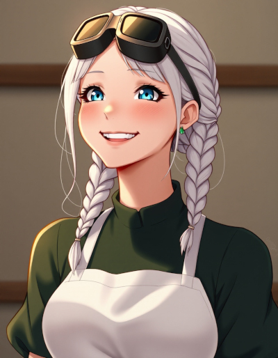

| Name | Iris Blackwell |
|---|---|
| Known Aliases | None |
| Title/Rank | Specialist (Dugaria Military) |
| Birthplace |
Village of Daleshade Cakana (Moon of Junas) |
| Occupation |
Witch Doctor/Healer (Dugaria) Remote Viewer (Dugaria) Courier (Space) |
| Relationships |
Amelia Blackwell (Sister) Erika Blackwell (Mother) Marta Blackwell (Sister) Tim Blackwell (Father) The Dead Queen (Enemy) |
| Appearances |
Novels |
Iris Blackwell
Iris Blackwell is the sister of Amelia Blackwell.
She’s a woman of average height with ash blond hair that’s usually in french braids. She’s Caucasian, with blue eyes. She’s five years older than Amelia, making her about 28 years old in the opening scene of Starwitch. She’s usually described as exceptionally beautiful.
In general, she’s quiet and a little somber, due to the way her fiance was murdered, just a short time after they announced their engagement to their village.
Iris is often helpful to others, with a tendency to remain calm, even during an emergency, a fact that’s quite helpful in a variety of situations.
She has excellent medical skills, comparable to a modern doctor, but with magic, she can do far more. Her ability to remain focused during an emergency allows her to skillfully manage a triage situation.
She’s also a skilled alchemist, with a focus on healing potions.
She was raised as a total pacifist by her mother, but over the course of the first novel, she begins to embrace a more practical philosophy of using violence only for self-defense and the greater good.
Though she’s normally quiet and reserved, she has a great loves for fast vehicles and a tendency to drive or pilot like a madwoman. When she’s at the controls of a vehicle (or anticipating such), her eyes light up in an unsettling fashion.
Her specialties with magic include sensory, communication and spirit magic, though during the first volume, she subconsciously refused to allow herself to excel at spirit magic, because it’s one of the three cornerstones of necromancy, which she was taught to fear and abhor.
As a result of this thinking, she subconsciously combined her talent with spirit magic with her scrying/remote-viewing spells, giving her a strange talent to hear, smell and touch things at the target location, by generating an artificial spirit at the target location. Much to the surprise of everyone, especially herself, she can use this artificial spirit to manipulate objects. This nature of her strange talent isn’t explained until volume two, when she meets a witch that specializes in spirit magic.
Before she was drafted into the Witch Intelligence Agency (WIA) of Dugaria, Iris worked in a hospital, as a doctor and healer.